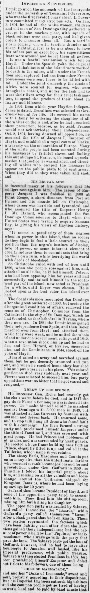
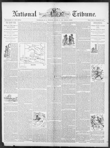

Tho career of Emperor Jacques I was finished in 1800 at Pont RougeLa carrera del emperador Jacques I concluyó en 1800
The National Tribune. Washington, D.C., October 23, 1890. Page 1. View the originalVer el original


See the full pageVer la página completaThe National Tribune reviewed the 19th-century history of Hispaniola, quoting writer Samuel Hazard from the 1871 American commission on Santo Domingo. The article recounted the reigns of early Haitian leaders, Spain's temporary reoccupation of Santo Domingo, the transfer of Columbus's supposed remains to Havana, and Santo Domingo's 1821 independence followed by Boyer's annexation.The National Tribune repasó la historia de La Española en el siglo XIX, citando al escritor Samuel Hazard de la comisión estadounidense de 1871 sobre Santo Domingo. El artículo relató los mandatos de los primeros gobernantes haitianos, la reocupación temporal de Santo Domingo por parte de España, el traslado de los supuestos restos de Colón a La Habana y la independencia de Santo Domingo en 1821 seguida de la anexión por parte de Boyer.
FULL TEXT:TEXTO COMPLETO:
IMPRESSING STEVEDORES.IMPRESIONANDO ESTIBADORES.
Domingo upon the approach of the insurgents under the leadership of Toussaint l'Ouverture, who was the first revolutionary chief. L'Ouverture committed many atrocious acts. On Jan. 3, 1801, he had all the white women, children and old men of San Domingo City gathered in groups in the market place, with squads of black soldiers over each party, and had given orders to massacre them all. But a terrific storm coming on, with terrible thunder and sharp lightning, just as he was about to have his orders put in execution, his superstitious fears were aroused and he let them all go free.Domingo ante la aproximación de los insurgentes bajo el liderazgo de Toussaint l'Ouverture, quien fue el primer jefe revolucionario. L'Ouverture cometió muchos actos atroces. El 3 de enero de 1801, hizo reunir a todas las mujeres blancas, niños y ancianos de la ciudad de Santo Domingo en grupos en la plaza del mercado, con escuadras de soldados negros sobre cada grupo, y había dado órdenes de masacrarlos a todos. Pero sobrevino una tempestad terrible, con truenos terribles y relámpagos agudos, justo cuando estaba a punto de hacer ejecutar sus órdenes, sus temores supersticiosos se despertaron y los dejó a todos en libertad.
It was a fearful retribution which fell on Hayti. Under the Spanish yoke the original Indian inhabitants of the island were worked to death in the mines, while under the French dominion captured Indians from other French possessions were sent there to be killed with toil. Under the joint ownership the coasts of Africa were scoured for negroes, who were brought in chains, and under the lash had to wear their lives away for their cruel taskmasters, to spend the product of their blood in luxury and idleness.Fue una retribución terrible la que cayó sobre Haití. Bajo el yugo español los habitantes indios originales de la isla fueron trabajados hasta la muerte en las minas, mientras que bajo la dominación francesa indios capturados de otras posesiones francesas fueron enviados allí para ser matados con el trabajo. Bajo la propiedad conjunta las costas de África fueron recorridas en busca de negros, que fueron traídos en cadenas, y bajo el látigo tuvieron que consumir sus vidas por sus crueles amos, para gastar el producto de su sangre en lujo y ocio.
In 1804, from which year Haytien independence is dated, Dessalines was selected as Governor-General for life. He covered his name with infamy by ordering the slaughter of all the whites on the island, after he had promised them protection, because, as he said, France would not acknowledge their independence. Oct. 8, 1804, having downed all opposition, he assumed the title of Jacques I, Emperor of Hayti, and established a royal court of blacks, a travesty on the monarchies of Europe. Many of the white people had been secreted during his massacres by faithful slaves, and finding this out at Cape St. Francois, he issued a proclamation that justice (?) was satisfied, and directing all whites who escaped the massacre to appear on the public plaza to be sent away. When they did so they were taken and shot, andEn 1804, año del que se fecha la independencia haitiana, Dessalines fue seleccionado como Gobernador General vitalicio. Cubrió su nombre de infamia ordenando la matanza de todos los blancos en la isla, después de haberles prometido protección, porque, como dijo, Francia no reconocería su independencia. El 8 de octubre de 1804, habiendo abatido toda oposición, asumió el título de Jacques I, Emperador de Haití, y estableció una corte real de negros, una parodia de las monarquías de Europa. Muchas de las personas blancas habían sido escondidas durante sus masacres por esclavos fieles, y al descubrir esto en Cabo San Francisco, emitió una proclama de que la justicia (?) estaba satisfecha, y dirigiendo a todos los blancos que escaparon de la masacre a aparecer en la plaza pública para ser enviados lejos. Cuando lo hicieron fueron tomados y fusilados, y
HIS BRUTAL ACTSSUS ACTOS BRUTALES
so incensed many of his followers that his soldiers rose against him. The career of Emperor Jacques I was finished in 1806 at Point Rouge, a short distance from Port au Prince, and his mantle fell on Christophe, whose career was horrible and tyrannical, and who assumed the title of Emperor Henry I. Mr. Hazard, who accompanied the San Domingo Commissioners to Hayti when the United States were trying to acquire Samana Bay, in giving his views of Haytien history, says:incensaron tanto a muchos de sus seguidores que sus soldados se levantaron contra él. La carrera del Emperador Jacques I terminó en 1806 en Point Rouge, a corta distancia de Puerto Príncipe, y su manto cayó sobre Christophe, cuya carrera fue horrible y tiránica, y quien asumió el título de Emperador Henry I. El Sr. Hazard, quien acompañó a los Comisionados de Santo Domingo a Haití cuando los Estados Unidos estaban tratando de adquirir la Bahía de Samaná, al dar sus opiniones de la historia haitiana, dice:
"It seems a peculiarity of these negroes when in power in this island, that no sooner do they begin to feel a little assured in their position than the negro's instinct of display, love of power, or some inherent element of cruelty induces them to commit acts that bring on their own ruin, while horrifying the world with deeds of bloodshed."«Parece una peculiaridad de estos negros cuando están en el poder en esta isla, que tan pronto como comienzan a sentirse un poco asegurados en su posición el instinto del negro de exhibición, amor por el poder, o algún elemento inherente de crueldad los induce a cometer actos que traen su propia ruina, mientras horrorizan al mundo con hechos de derramamiento de sangre.»
So Christophe ruled with rod of iron until 1820, when the people rose against him, and, attacked on all sides, he killed himself. Petion, who had been opposing him for years and had successfully maintained himself in the south-west part of the island, now acted as President for a while, until Boyer was chosen. He is looked upon as the best ruler the island ever had.Así Christophe gobernó con vara de hierro hasta 1820, cuando el pueblo se levantó contra él, y, atacado por todos lados, se mató a sí mismo. Petion, que había estado oponiéndose a él por años y se había mantenido exitosamente en la parte suroeste de la isla, actuó ahora como Presidente por un tiempo, hasta que Boyer fue elegido. Es considerado el mejor gobernante que la isla jamás tuvo.
The Spaniards soon reoccupied San Domingo after the great outburst of 1803, but seeing the disorganized condition of affairs, removed the remains of Christopher Columbus from the Cathedral in the city of St. Domingo, which he had founded, to the Cathedral in Havana, where they now are. In 1821 the Dominicans gained their independence from Spain, and then Boyer marched over from Hayti and attacked them while they were weak, and he united the whole island under one Government, ruling until 1842, when a revolution shook him up and he had to flee, and Gen. Herard, or Riviere, succeeded him, and the Dominicans, in 1844, shook off the yoke of Hayti.Los españoles pronto reocuparon Santo Domingo después del gran estallido de 1803, pero viendo la condición desorganizada de los asuntos, removieron los restos de Cristóbal Colón de la Catedral en la ciudad de Santo Domingo, que él había fundado, a la Catedral en La Habana, donde están ahora. En 1821 los dominicanos ganaron su independencia de España, y entonces Boyer marchó desde Haití y los atacó mientras estaban débiles, y unió la isla entera bajo un solo Gobierno, gobernando hasta 1842, cuando una revolución lo sacudió y tuvo que huir, y el general Herard, o Riviere, lo sucedió, y los dominicanos, en 1844, se sacudieron el yugo de Haití.
Herard raised an army and marched against them, but he got decently trounced and run out, and when he reached home they banished him and put Guerrier in his place. This colored gentleman died very suddenly next year, and Pierrot was selected to succeed him, but party oppositions were so bitter that he got scared and resigned,—Herard levantó un ejército y marchó contra ellos, pero fue decentemente derrotado y expulsado, y cuando llegó a casa lo desterraron y pusieron a Guerrier en su lugar. Este caballero de color murió muy de repente el año siguiente, y Pierrot fue seleccionado para sucederlo, pero las oposiciones de partido eran tan amargas que se asustó y renunció,—
THREW UP THE SPONGE.TIRÓ LA ESPONJA.
His successor, Gen. Riche, had scarcely got the chair warm before he died, and in 1847 the gay duck Faustin Soulouque was inducted into power. To 'make himself solid' he marched against Domingo with 5,000 men in 1849, but he was attacked at Las Carreras by Santana with 400 men and driven back. He returned home, and to stop talk hung all those who found fault with his campaign. He then formed a strong party and proclaimed himself Emperor under the title of Faustine I, and was crowned with great pomp. He had Princes and noblemen of all grades, and was surrounded by black guards. He erected a huge frame building near Port au Prince, elegantly fitted it up, and called it the Tuilleries, which name it yet retains.Su sucesor, el general Riche, apenas había calentado la silla antes de que muriera, y en 1847 el alegre pato Faustin Soulouque fue inducido al poder. Para 'hacerse sólido' marchó contra Domingo con 5,000 hombres en 1849, pero fue atacado en Las Carreras por Santana con 400 hombres y hecho retroceder. Regresó a casa, y para detener los comentarios colgó a todos los que encontraron falta en su campaña. Entonces formó un partido fuerte y se proclamó a sí mismo Emperador bajo el título de Faustine I, y fue coronado con gran pompa. Tenía Príncipes y nobles de todos los grados, y estaba rodeado por guardias negros. Erigió un enorme edificio de armazón cerca de Puerto Príncipe, lo acondicionó elegantemente, y lo llamó las Tuilleries, cuyo nombre todavía retiene.
The ebony Earls, Marquises and Counts put on so many airs that the unfortunate darkies who were not so rank became jealous and formed a revolution under Gen. Geffrard in 1859; so Faustine I folded his imperial purple about him, and seizing on all the valuables and loose change around the Tuilleries, skipped for Kingston, Jamaica, where he had been laying up savings for 10 years.Los Condes, Marqueses y Condes ébano se dieron tantos aires que los desafortunados negros que no eran de tan alto rango se pusieron celosos y formaron una revolución bajo el general Geffrard en 1859; así Faustine I dobló su púrpura imperial sobre sí, y apoderándose de todos los valores y el cambio suelto alrededor de las Tuilleries, se escapó a Kingston, Jamaica, donde había estado acumulando ahorros por 10 años.
Geffrard then became President of Hayti, and some of the opposition party tried to assassinate him. They fired into his sitting-room, missing him but killing his daughter.Geffrard se convirtió entonces en Presidente de Haití, y algunos del partido de oposición trataron de asesinarlo. Dispararon a su salón, fallándolo a él pero matando a su hija.
The opposition party was headed by Salnave, and called themselves the 'Lizards,' while Geffrard's party called themselves 'Cacos,' after a black parrot that feeds on lizards. These two parties represented the factions which have been fighting each other since the Haytiens gained their independence; but the balance of power is held by the 'Piquints,' or backwoodsmen, who always go with the party that pays the best. The Salnave party got the best of Geffrard, however, and he had to leave after Soulouque to Jamaica, well loaded, like his imperial predecessor, with public treasure. Salnave was then elected President in 1867, but soon proclaimed himself Emperor and doled out titles to his followers, one of them beingEl partido de oposición era encabezado por Salnave, y se llamaban a sí mismos los «Lagartos», mientras que el partido de Geffrard se llamaba a sí mismo «Cacos», por un loro negro que se alimenta de lagartos. Estos dos partidos representaban las facciones que han estado luchando entre sí desde que los haitianos ganaron su independencia; pero el balance del poder lo tienen los «Piquints», o montañeses, que siempre van con el partido que paga mejor. El partido de Salnave obtuvo lo mejor de Geffrard, sin embargo, y tuvo que irse tras Soulouque a Jamaica, bien cargado, como su predecesor imperial, con tesoro público. Salnave fue entonces elegido Presidente en 1867, pero pronto se proclamó a sí mismo Emperador y repartió títulos a sus seguidores, uno de ellos siendo
"DUKE OF MARMALADE,"«DUQUE DE MERMELADA»,
and another 'Duke of Lemonade,' sweet and sour, probably according to their dispositions. But his Imperial Highness cut such high shines and the common people got so tired of having to work hard and be paid by band music thaty otro 'Duque de Limonada', dulce y agrio, probablemente según sus disposiciones. Pero su Alteza Imperial se dio tales ínfulas y el pueblo común se cansó tanto de tener que trabajar duro y ser pagado con música de banda que
[Editor's note: the paper writes of the east as part of Hayti. From 1822 to 1844 the Dominican Republic was held by Haitian military occupation, against its people's will; it restored its independence on February 27, 1844.][Nota del editor: el periódico habla del este como parte de Haití. De 1822 a 1844 la República Dominicana estuvo bajo ocupación militar haitiana, contra la voluntad de su pueblo; restauró su independencia el 27 de febrero de 1844.]